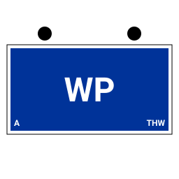
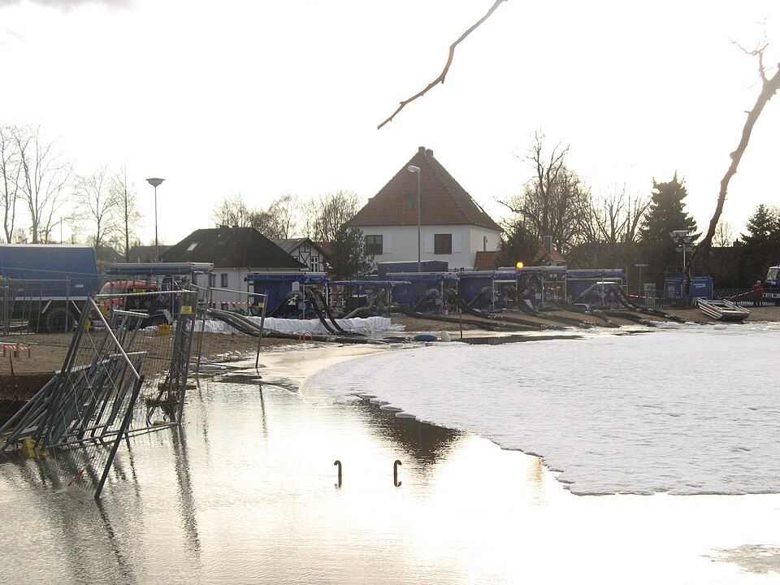

Fachgruppe Wasserschaden/Pumpen: Erfassungsbogen ausfüllen

Bei der Fachgruppe Wasserschaden/Pumpen entscheidet eine einzige Zahl darüber, welche Einheit angefordert wird: die Förderleistung der Schmutzwasserkreiselpumpe. Sie steckt im Typ, im Anhänger und in der Kennzahl des Funkrufnamens. Diese Seite zeigt, wie sich das im Erfassungsbogen niederschlägt und welche Felder die App beim Wählen des Einheitstyps schon füllt. Wer erst den allgemeinen Überblick sucht, findet ihn auf der Seite zum THW-Erfassungsbogen.
Bogen für die FGr WP ausfüllen
Pumpen, Lenzen, Deiche sichern
Die Fachgruppe führt bei Überflutungen und Überschwemmungen größeren Ausmaßes Pump- und Lenzarbeiten durch, um Gefahren einzudämmen und zu beheben. Sie beseitigt Schmutz- und Abwasser aus Schadensgebieten und bekämpft schädigend eindringendes Wasser — in Kellern, in der Kanalisation, in Schutzräumen und Brunnen, in Verkehrsanlagen und anderen Anlagen öffentlichen Interesses. Bei der Deich- und Dammsicherung wirkt sie mit und unterstützt andere Hilfskräfte. Zur Ausstattung gehören neben den Pumpen eine umfangreiche Kabel- und Schlauchausstattung sowie Auffangbehälter für Wasser, Abwasser und kontaminiertes Löschwasser. (Sinngemäß nach THWiki, abgerufen im August 2026; THWiki ist ein privat betriebenes Wiki und keine amtliche Seite des THW.)

Typ A, B, C: die Förderleistung entscheidet
Die drei Typen unterscheiden sich in der Förderleistung des Anhängers mit Schmutzwasserkreiselpumpe. Diese Zuordnung steht nicht nur in der externen Beschreibung, sondern auch in der Funkrufnamen-Taschenkarte, die in der App hinterlegt ist — sie ist damit doppelt abgesichert.
| Einheitstyp | StAN-Nr. | Förderleistung | Anhänger | Kennzahl Teileinheit |
|---|---|---|---|---|
| FGr WP (A) | 03-04a | 5.000 l/min | Anh SwPu klein | 47 |
| FGr WP (B) | 03-04b | 15.000 l/min | Anh SwPu mittel | 48 |
| FGr WP (C) | 03-04c | 25.000 l/min | Anh SwPu groß | 49 |
Die StAN-Nummern beginnen hier mit 03 und nicht mit 02 wie bei den Fachgruppen des Technischen Zuges — die FGr WP gehört zu einem anderen StAN-Block. Wer einen Bogen mit der Nummer 02-04 vor sich hat, hat die Fachgruppe Räumen erwischt, nicht die Pumpen.
Zwölf Einsatzkräfte, zwei Truppführungen
Die FGr WP ist mit zwölf Einsatzkräften aufgestellt, und zwar bei allen drei Typen gleich: eine Gruppenführung, zwei Truppführungen, neun Fachhelferinnen und Fachhelfer. In der Stärkenotation des Bogens sind das -/3/9/12 — Gruppen- und Truppführung zählen zusammen als die drei Unterführer. Damit ist sie größer als die meisten Fachgruppen des Technischen Zuges, und die zweite Truppführung ist der sichtbarste Unterschied im Personalteil des Bogens. Hinzu kommt eine Reserve in gleicher Stärke, die nicht mit ausrückt und deshalb in der Vorbelegung nicht angelegt wird.
Einsatzmittel und Funkrufnamen
Vier Einsatzmittel legt die App beim Wählen des Einheitstyps an. Zwei davon sind Funkstellen und bekommen den Funkrufnamen nach Taschenkarte („Heros“, eigener Standort, Kennzahl der Teileinheit und des Fahrzeugs), die beiden Anhänger nicht.
| Einsatzmittel | FGr WP (A) | FGr WP (B) | FGr WP (C) |
|---|---|---|---|
| Lastkraftwagen mit Ladebordwand | 47/43 | 48/43 | 49/43 |
| Mannschaftslastwagen IV (MLW IV) | 47/34 | 48/34 | 49/34 |
| Anhänger Schmutzwasserpumpe | kein Funkrufname (klein / mittel / groß je Typ) | ||
| Anhänger Plane/Spriegel | kein Funkrufname | ||
„Heros <Ortsverband> 48/43“ ist damit der Lastkraftwagen mit Ladebordwand der Fachgruppe Wasserschaden/Pumpen Typ B. Das Kennzeichen lässt die Vorbelegung offen — das ist das eine Feld, das der Ortsverband selbst nachträgt.
Bogen ausfüllen, Schritt für Schritt
- In Schritt 1 „Einheit“ die Organisation THW wählen und im Feld Einheitstyp „Fachgruppe Wasserschaden/Pumpen (A)“, „(B)“ oder „(C)“ — passend zur Förderleistung der eigenen Pumpe.
- Ortsverband tippen; Name, Kürzel, Telefon und E-Mail kommen aus dem Verzeichnis, meist samt Regionalstelle und Landesverband.
- Zwölf Personalplätze durchgehen: streichen, wer nicht ausrückt, ergänzen, wer zusätzlich mitfährt. Kennzeichen bei den Fahrzeugen nachtragen.
- Einsatzauftrag benennen und das PDF drucken — oder den QR-Code der letzten Seite direkt am Meldekopf scannen lassen.
Beispielbögen der FGr WP liegen der App bei: Typ A aus Freiburg, Deggendorf und Heidenrod, Typ B aus Duisburg und Lemgo, Typ C aus Plauen. Ihre Einsatzstichworte spiegeln die Typenlogik wider — „Starkregen — Auspumpen Unterführungen“ beim kleinen Typ, „Wasserförderung 15.000 l/min“ beim mittleren, „Großpumpeneinsatz Polder“ beim großen.
Wo Namen und Erreichbarkeiten bleiben
Die Personendaten deiner Einsatzkräfte stehen im lokalen Speicher deines Geräts: kein Server, kein Konto, keine Cloud. Ein Bogen verlässt das Gerät nur, wenn du ihn selbst weitergibst — als PDF, als Datei, als QR-Code oder als Link. Welche Einträge gespeichert werden und welche Verbindungen die Anwendung von sich aus aufbaut, ist unter Open Source und Datenschutz vollständig aufgeführt.
Bogen für die FGr WP ausfüllen
Häufige Fragen zur FGr WP
Welchen Typ trage ich ein, wenn ich die Förderleistung nicht sicher weiß?
Der Anhänger gibt sie vor: Anh SwPu klein steht für 5.000 l/min (Typ A), mittel für 15.000 l/min (Typ B), groß für 25.000 l/min (Typ C). Steht auf dem Gerät eine andere Leistung, ist das kein Grund, den Typ zu wechseln — im Bogen lässt sich das Einsatzmittel frei benennen.
Warum steht das MLW IV im Bogen, obwohl es in manchen Übersichten fehlt?
Der Mannschaftslastwagen IV gehört nach der StAN-Fahrzeugvorbelegung des Programms (Stand 01.07.2026) zur FGr WP. Ältere und externe Übersichten führen es teils nicht auf. Falls es bei deiner Einheit tatsächlich nicht vorhanden ist, streichst du es im Bogen — die Vorbelegung ist ein Vorschlag, keine Vorschrift.
Wo finde ich die Vorlage des Bogens?
Aufbau und Felder des Einheiten-Erfassungsbogens beschreibt die Seite Vorlage und Aufbau. Eine weitere Fachgruppe desselben Ortsverbands füllst du genauso aus — etwa die Fachgruppe Notversorgung/Notinstandsetzung, die in vielen Technischen Zügen neben der FGr WP steht.
Stand der Angaben
Stärke, StAN-Nummern, Einsatzmittel und die Kennzahlen 47 bis 49 stammen aus den Vokabularen der App auf Grundlage der StAN-Einzeldokumente mit Stand 01.07.2026; die Förderleistungen sind dort ebenso hinterlegt wie in der externen Beschreibung. Auftragsbeschreibung, Ausstattungsliste und Reservestärke stammen aus dem privat betriebenen THWiki. Dessen Seite zur FGr WP ist seit September 2023 unverändert und nennt kein StAN-Datum — die dort genannte Zahl von rund 142 Fachgruppen bundesweit ist entsprechend alt und nicht datierbar. Verbindlich ist die aktuelle StAN deiner Einheit.
Kostenlos, ohne Anmeldung, alle Daten bleiben auf deinem Gerät.